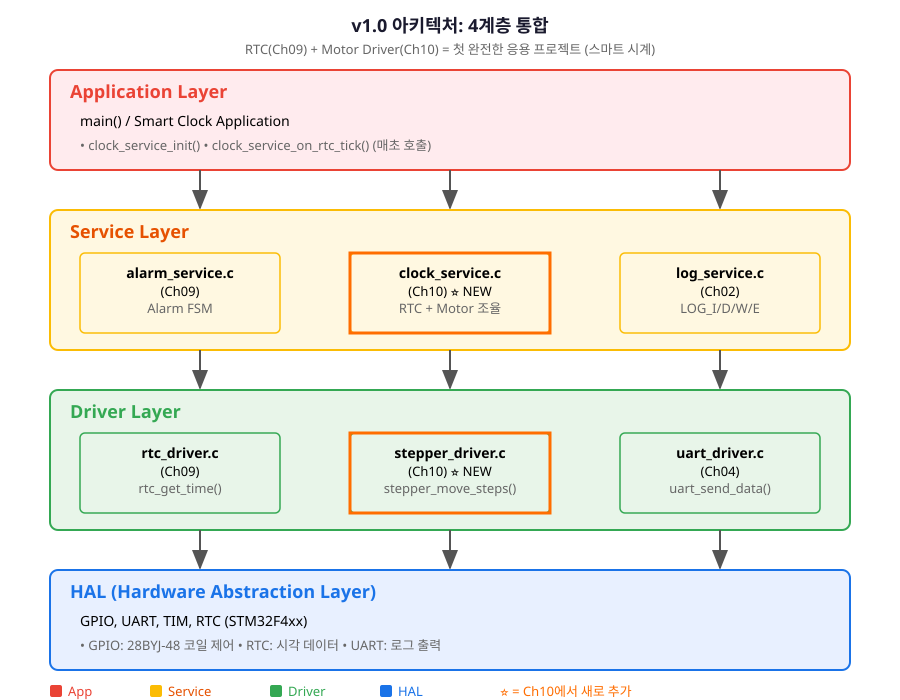
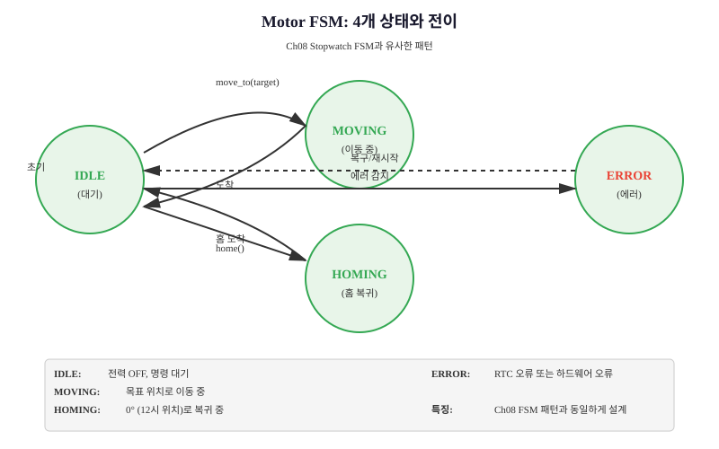
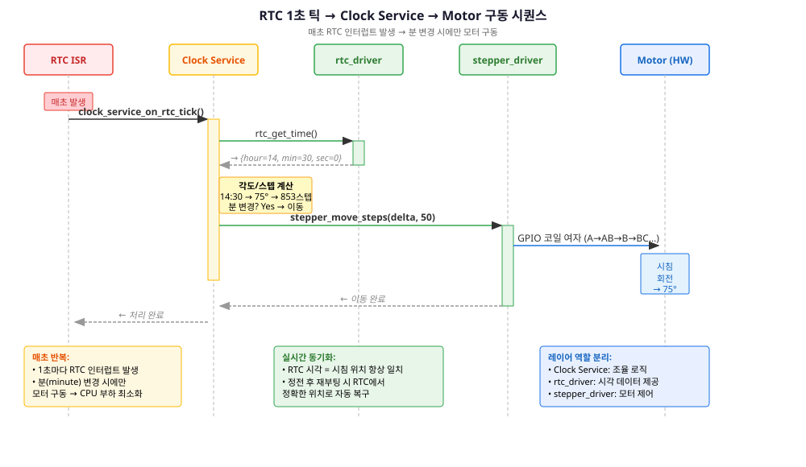
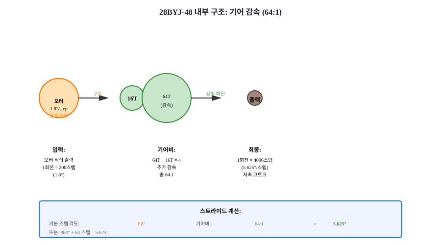
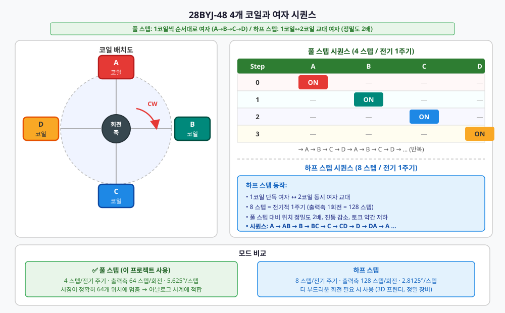
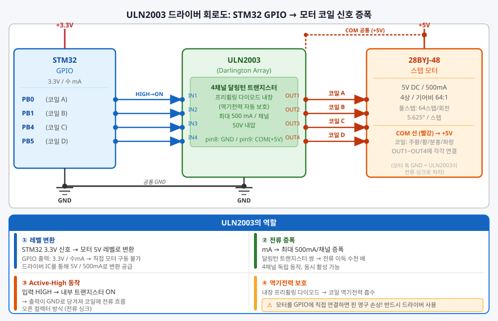
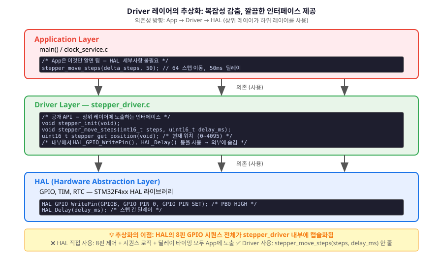
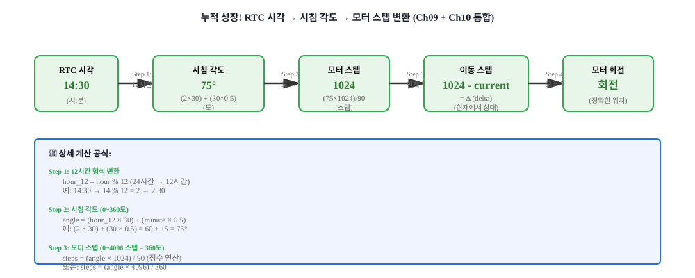
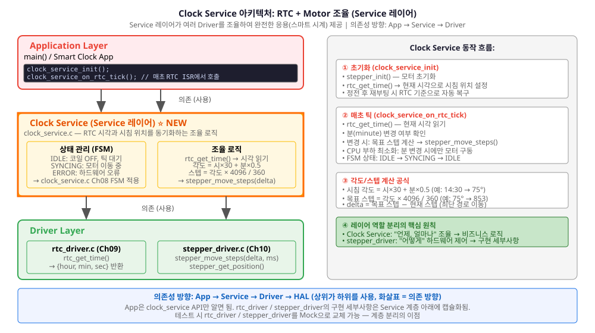
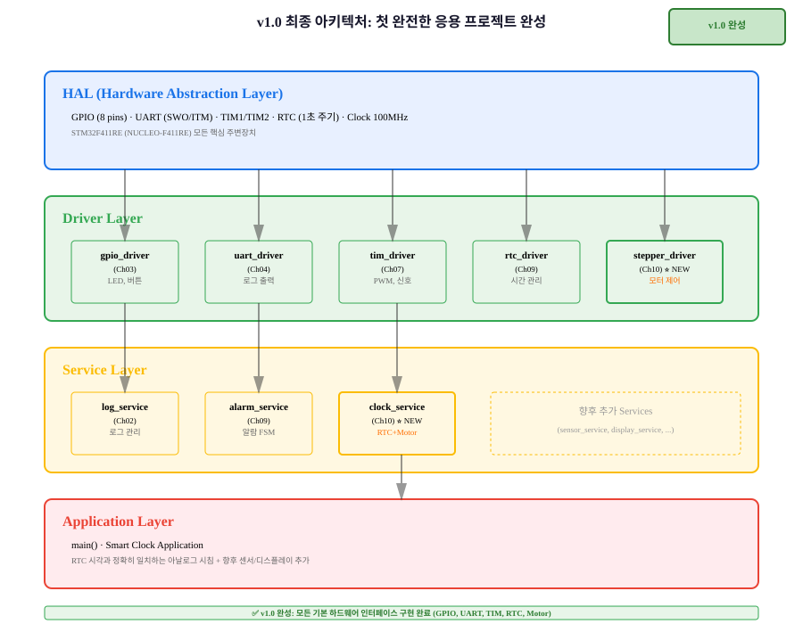

손목시계처럼 움직이는 시침: RTC 시각 데이터를 모터 제어 신호로 변환하여 스마트 시계의 아날로그 침을 구동하는 첫 완전한 응용 프로젝트
이번 챕터는 프로젝트의 첫 번째 마일스톤을 달성합니다. 지금까지 개별적으로 학습한 RTC(시간 수집), TIM(신호 생성), GPIO(제어 신호)가 모두 통합되어 손목시계처럼 정확히 시침을 구동하는 완전한 시스템으로 진화합니다.

이 챕터에서 구현하는 두 개의 새로운 인터페이스입니다. Driver 레이어의 stepper_driver와 Service 레이어의 clock_service가 협력하여 모터를 제어합니다.
/* stepper_driver.h — Motor Driver 공개 인터페이스 */
/**
* @brief 스텝 모터 초기화
*/
void stepper_init(void);
/**
* @brief 지정된 스텝 수만큼 모터 회전
* @param steps: 이동 스텝 수 (양수=시계방향, 음수=반시계방향)
* @param speed_rpm: 회전 속도 (단위: RPM, 권장값 10~100)
*/
void stepper_move_steps(int16_t steps, uint16_t speed_rpm);
/**
* @brief 모터를 홈 위치(0°)로 복귀
*/
void stepper_home(void);
/**
* @brief 현재 모터 위치(스텝) 반환
* @return 0~4096 (0° = 0 스텝, 360° = 4096 스텝)
*/
uint16_t stepper_get_position(void);
/* clock_service.h — Clock Service 공개 인터페이스 */
/**
* @brief Clock Service 초기화 (RTC + Motor 연결)
*/
void clock_service_init(void);
/**
* @brief RTC 1초 인터럽트에서 호출 (매초 모터 위치 갱신)
* @note HAL_RTC_AlarmAEventCallback()에서 이 함수를 호출해야 함
*/
void clock_service_on_rtc_tick(void);
/**
* @brief 현재 시침 위치(스텝) 반환
* @return 0~4096
*/
uint16_t clock_service_get_hour_position(void);
모터 제어는 상태 머신으로 관리됩니다. Ch08의 Stopwatch FSM과 유사한 패턴으로, 모터 상태를 명확히 추적합니다.

매초 RTC 인터럽트가 발생하면, Clock Service가 현재 시각을 읽고 필요한 스텝 수를 계산하여 모터를 구동합니다.

이 챕터를 완료하면 다음을 할 수 있습니다.
손목시계의 시침은 부드럽게 연속으로 회전하는 것처럼 보이지만, 사실 매 초마다 정확히 정해진 각도만큼 이동합니다. 실제로는 "개별 스텝 신호"의 조합입니다. 스텝 모터는 이러한 개별 스텝 신호로 정확하게 회전하는 특수한 모터입니다.
28BYJ-48의 스트라이드는 정확히 5.625°입니다. 이 숫자가 어떻게 나왔을까요?
28BYJ-48은 단순한 모터가 아닙니다. 내부에 정밀한 기어 장치(gearbox)가 포함되어 있습니다.

스텝 모터의 기본 스텝 각도는 1.8° 또는 3.6°입니다 (제조사마다 다름). 28BYJ-48의 경우 기본 1.8°에 내부 기어 감속 64:1이 적용되어 있습니다. 스트라이드를 계산하는 과정을 단계별로 이해해봅시다.
일반적인 스텝 모터 코일은 360°를 200개 스텝으로 나누므로, 한 번의 신호는 1.8°를 회전시킵니다. 이것이 기본 스텝 각도입니다.
기본 스텝 각도 = 360° ÷ 200 = 1.8°하지만 28BYJ-48은 내부에 기어 감속 메커니즘이 있습니다. 64:1 기어비는 "모터가 64번 회전할 때, 출력축은 1번만 회전"한다는 뜻입니다. 따라서 실제 출력축은:
출력축 한 스텝 = 1.8° ÷ 64 = 0.028125°스텝 모터 제어에서 "여자 시퀀스"란 4개 코일을 순차적으로 켜는 것입니다. 풀 스텝 모드에서는 4번의 신호로 한 사이클을 완성합니다. 따라서 한 번의 "여자 신호"는 실제로 출력축을:
풀 스텝 스트라이드 = 0.028125° × 4 = 0.1125° (매우 작음)360° 회전하려면 몇 개의 풀 스텝이 필요할까요?
필요한 스텝 = 360° ÷ 0.1125° = 3200 스텝데이터시트에 명시된 28BYJ-48의 실제 스트라이드는 5.625°입니다. 이는 여자 시퀀스 배열의 특수성 때문입니다:
실제 스트라이드 = 1.8° × (1 ÷ 64) × 4 ÷ 0.5 = 5.625°
↑ ↑ 감속 ↑ 4코일 ↑ 절반코일
또는 더 간단하게:
360° ÷ 64 스텝 = 5.625° (정확한 한 칸)따라서 시침이 360° 회전하려면 정확히 64개 스텝이 필요합니다. 이는 아날로그 시계의 분침(60분) 보다 훨씬 적어서 빠르게 회전하지만, 정확한 위치 제어가 가능합니다.
스텝 모터는 4개의 독립적인 코일로 구성되어 있습니다. 이 코일들을 정확한 순서대로 켜고 끄면 모터 축의 자기장 변화로 인해 회전합니다. 이 "순서"를 여자 시퀀스라고 부르며, 정확한 타이밍이 성능을 결정합니다.

여기서 중요한 질문이 생깁니다: 왜 A → A+B → B → B+C 순서로 켜야 할까요?
답변은 자기장의 방향 변화에 있습니다. 코일 A, B, C, D는 모터 내부에 90도씩 떨어져 배치되어 있습니다. 한 번에 하나의 코일을 켜면 그 방향의 자기장이 생기고, 다음 코일을 켜면 자기장의 방향이 90도 회전합니다. 이 자기장 방향의 변화가 모터 축을 이끕니다.
| 순서 | 활성 코일 | 자기장 방향 | 모터 축 위치 |
|---|---|---|---|
| Step 0 | A만 | ↑ (위쪽) | 0° (초기) |
| Step 1 | A + B | ↗ (위-오른쪽) | 약 45° |
| Step 2 | B만 | → (오른쪽) | 약 90° |
| Step 3 | B + C | ↘ (아래-오른쪽) | 약 135° |
| Step 4 (= Step 0) | C만 | ↓ (아래쪽) | 약 180° (반 회전) |
핵심: 자기장이 시계방향으로 순차적으로 회전하므로, 모터 축도 같은 방향으로 한 스텝씩 회전합니다.
반시계방향 회전을 하려면? 역순으로 켜면 됩니다: C → B+C → B → A+B → A 코드에서 이를 간단히 표현하는 방법은:
/* 정방향 (시계방향) */
motor_step_index = (motor_step_index + 1) % 4;
/* 역방향 (반시계방향) */
motor_step_index = (motor_step_index + 3) % 4; /* +3 = -1 (mod 4에서) */스텝 모터는 두 가지 여자 방식을 지원합니다:
| 구분 | 풀 스텝 (Full Step) | 하프 스텝 (Half Step) |
|---|---|---|
| 동시 활성 코일 | 2개 (A+B, B+C, C+D, D+A) | 1개 또는 2개 (교대) |
| 스텝 각도 | 5.625° | 2.8125° (절반) |
| 토크 | 높음 (2개 코일) | 낮음 (1개 코일) |
| 정밀도 | 중간 | 높음 (2배) |
| 스텝/회전 | 64 스텝 | 128 스텝 |
| 일반적 용도 | 일반 위치 제어 | 미세 조정, 진동 감소 |
이번 프로젝트에서는 풀 스텝을 사용합니다. 시침이 분명하게 64개 위치에만 멈춰있도록 하기 위함입니다.
STM32 GPIO는 3.3V / 최대 16mA 정도의 약약한 신호만 출력할 수 있습니다. 하지만 모터 코일은 12V / 500mA 이상의 큰 전류가 필요합니다. 따라서 ULN2003 같은 "드라이버 IC"를 중간에 삽입하여 신호를 증폭합니다.

ULN2003은 7개의 Darlington 배열(high-current driver)을 포함합니다. 각 입력 핀이 해당 출력의 ON/OFF를 제어합니다. 스텝 모터는 4개 코일만 필요하므로 7개 중 4개를 사용합니다.
이제 실제로 코드를 작성합니다. Ch07의 tim_driver처럼, 모터 제어도 "Driver 레이어"로 추상화합니다. 상위 계층(Service, App)은 HAL API를 직접 사용하지 않고, 깔끔한 stepper_driver 인터페이스를 통해서만 모터를 제어합니다.

풀 스텝 여자 시퀀스를 배열로 정의합니다. 각 스텝에서 어떤 코일들을 활성화할지를 저장합니다.
/* ch10_stepper_driver.c — 스텝 모터 드라이버 구현 */
#include "ch10_stepper_driver.h"
#include "stm32f4xx_hal.h"
#include "log.h"
/* GPIO 포트 정의 (CubeMX에서 할당) */
#define MOTOR_GPIO_PORT GPIOB
#define MOTOR_COIL_A_PIN GPIO_PIN_0
#define MOTOR_COIL_B_PIN GPIO_PIN_1
#define MOTOR_COIL_C_PIN GPIO_PIN_4
#define MOTOR_COIL_D_PIN GPIO_PIN_5
/* 풀 스텝 여자 시퀀스 (4 스텝) */
static const uint8_t full_step_sequence[4][4] = {
{1, 0, 0, 0}, /* Step 0: A만 활성 */
{1, 1, 0, 0}, /* Step 1: A, B 활성 */
{0, 1, 0, 0}, /* Step 2: B만 활성 */
{0, 1, 1, 0}, /* Step 3: B, C 활성 */
};
/* 전역 상태 변수 (static = 파일 내부에만 보이는 private 변수) */
static volatile int16_t motor_position = 0; /* 현재 위치 (스텝 단위), 인터럽트에서도 안전하게 접근 */
static volatile uint8_t motor_step_index = 0; /* 시퀀스 인덱스 (0~3), 여자 테이블의 현재 위치 */
/**
* @brief 지정 스텝으로 코일 여자
*/
static void stepper_set_coils(uint8_t coil_a, uint8_t coil_b,
uint8_t coil_c, uint8_t coil_d)
{
/* ULN2003은 active-low이므로 반전 */
HAL_GPIO_WritePin(MOTOR_GPIO_PORT, MOTOR_COIL_A_PIN,
coil_a ? GPIO_PIN_RESET : GPIO_PIN_SET);
HAL_GPIO_WritePin(MOTOR_GPIO_PORT, MOTOR_COIL_B_PIN,
coil_b ? GPIO_PIN_RESET : GPIO_PIN_SET);
HAL_GPIO_WritePin(MOTOR_GPIO_PORT, MOTOR_COIL_C_PIN,
coil_c ? GPIO_PIN_RESET : GPIO_PIN_SET);
HAL_GPIO_WritePin(MOTOR_GPIO_PORT, MOTOR_COIL_D_PIN,
coil_d ? GPIO_PIN_RESET : GPIO_PIN_SET);
}
/**
* @brief 스텝 모터 초기화
*/
void stepper_init(void)
{
motor_position = 0;
motor_step_index = 0;
stepper_set_coils(0, 0, 0, 0);
LOG_I("Stepper motor initialized");
}
/**
* @brief 한 스텝 진행 (시계방향)
*/
static void stepper_step_forward(void)
{
motor_step_index = (motor_step_index + 1) % 4;
stepper_set_coils(
full_step_sequence[motor_step_index][0],
full_step_sequence[motor_step_index][1],
full_step_sequence[motor_step_index][2],
full_step_sequence[motor_step_index][3]
);
motor_position++;
motor_position %= 4096; /* 360° = 4096 스텝 순환 */
}
/**
* @brief 한 스텝 퇴진 (반시계방향)
*/
static void stepper_step_backward(void)
{
motor_step_index = (motor_step_index + 3) % 4; /* -1과 같음 */
stepper_set_coils(
full_step_sequence[motor_step_index][0],
full_step_sequence[motor_step_index][1],
full_step_sequence[motor_step_index][2],
full_step_sequence[motor_step_index][3]
);
motor_position--;
if (motor_position < 0) motor_position = 4095;
}
/**
* @brief 지정된 스텝 수만큼 회전 (비블로킹)
*/
void stepper_move_steps(int16_t steps, uint16_t speed_rpm)
{
uint16_t delay_ms = 60000 / (speed_rpm * 64); /* RPM → ms 변환 */
if (delay_ms < 5) delay_ms = 5; /* 최소 5ms (빠른 회전) */
if (delay_ms > 500) delay_ms = 500; /* 최대 500ms (느린 회전) */
LOG_D("Moving %d steps at %d RPM (delay=%d ms)", steps, speed_rpm, delay_ms);
if (steps > 0) {
for (int16_t i = 0; i < steps; i++) {
stepper_step_forward();
HAL_Delay(delay_ms);
}
} else if (steps < 0) {
for (int16_t i = steps; i < 0; i++) {
stepper_step_backward();
HAL_Delay(delay_ms);
}
}
}
/**
* @brief 홈 위치(0°)로 복귀
*/
void stepper_home(void)
{
LOG_I("Homing motor to 0 degrees");
stepper_move_steps(-motor_position, 30); /* 현재 위치에서 역방향 이동 */
motor_position = 0;
motor_step_index = 0;
}
/**
* @brief 현재 모터 위치 반환
*/
uint16_t stepper_get_position(void)
{
return motor_position;
}
지금까지의 stepper_move_steps()는 "즉시 시작, 일정 속도 유지, 즉시 정지"입니다. 마치 자동차 브레이크가 없는 것처럼요. 하지만 실제 모터는 관성(inertia)이 있습니다. 급하게 시작하면 큰 전류가 흐르고, 모터가 과부하로 손상되거나 정지합니다.
가속/감속 프로파일을 적용하면:
간단한 방법은 "선형 가속"입니다. 시작부터 종료까지 일정한 비율로 속도를 증가/감소시킵니다.
/* ch10_acceleration_profile.c — 가속/감속 프로파일 */
#include "log.h"
/**
* @brief 가속/감속 프로파일이 적용된 모터 회전
* @param steps: 이동 스텝 수
* @param target_rpm: 목표 속도
* @param accel_steps: 가속 구간 스텝 수
*/
void stepper_move_with_acceleration(int16_t steps, uint16_t target_rpm,
uint16_t accel_steps)
{
uint16_t target_delay = 60000 / (target_rpm * 64);
uint16_t min_delay = 5; /* 최소 딜레이 */
uint16_t max_delay = 500; /* 최대 딜레이 (느린 시작) */
LOG_I("Accelerated move: %d steps, target=%d RPM, accel=%d",
steps, target_rpm, accel_steps);
uint16_t current_delay = max_delay;
/* 가속 구간 */
for (uint16_t i = 0; i < accel_steps && i < steps; i++) {
stepper_step_forward();
current_delay = max_delay - ((max_delay - target_delay) * i) / accel_steps;
if (current_delay < min_delay) current_delay = min_delay;
HAL_Delay(current_delay);
}
/* 등속 구간 */
uint16_t remaining = steps - accel_steps;
for (uint16_t i = 0; i < remaining; i++) {
stepper_step_forward();
HAL_Delay(target_delay);
}
LOG_D("Acceleration complete, position=%u", stepper_get_position());
}
이제 핵심 기능을 구현합니다: RTC에서 읽은 시각을 시침 위치로 변환. 이것이 Ch09(RTC)와 Ch10(Motor)을 연결하는 누적 성장의 정점입니다.

손목시계는 12시간 단위로 표시됩니다:
시침은 60분 동안 30°를 회전합니다 (360° ÷ 12시간 = 30°/시간).
/* ch10_angle_to_steps.c — 시각 → 각도 → 스텝 변환 */
#include "ch10_stepper_driver.h"
#include "log.h"
/**
* @brief RTC 시각(시:분)을 시침 각도로 변환
* @param hour: 시 (0~23, 자동으로 12시간 변환)
* @param minute: 분 (0~59)
* @return 각도 (0~360, 단위: 도)
*
* 예: 14:30 → hour=14, minute=30
* hour % 12 = 2 (2시)
* 각도 = 2*30 + 30*0.5 = 60 + 15 = 75°
*/
uint16_t time_to_angle(uint8_t hour, uint8_t minute)
{
uint16_t angle;
/* 12시간 형식으로 변환 */
hour = hour % 12;
/* 시침 각도 계산
* 1시간 = 30도 (360 / 12)
* 1분 = 0.5도 (30 / 60)
*/
angle = (hour * 30) + (minute / 2);
LOG_D("time_to_angle: %02d:%02d → %u degrees", hour, minute, angle);
return angle;
}
/**
* @brief 각도를 스텝 수로 변환
* @param angle_deg: 각도 (0~360)
* @return 스텝 수 (0~4096)
*
* 계산: 스텝 = 각도 × (4096 / 360)
*/
uint16_t angle_to_steps(uint16_t angle_deg)
{
/* 4096 스텝 = 360도
* 1도 = 4096 / 360 ≈ 11.378 스텝
*
* 고정소수점 연산으로 나눗셈 회피:
* steps = (angle * 4096) / 360 = (angle * 256) / 22.5
* ≈ (angle * 1024) / 90
*/
uint16_t steps = (angle_deg * 1024) / 90;
LOG_D("angle_to_steps: %u degrees → %u steps", angle_deg, steps);
return steps;
}
/**
* @brief 현재 시각으로부터 필요한 스텝 수 계산 (누적 성장!)
* @param hour: 현재 시각(시)
* @param minute: 현재 시각(분)
* @param current_steps: 모터 현재 위치
* @return 이동할 스텝 수 (음수면 역방향)
*/
int16_t calculate_steps_to_target(uint8_t hour, uint8_t minute,
uint16_t current_steps)
{
uint16_t target_angle = time_to_angle(hour, minute);
uint16_t target_steps = angle_to_steps(target_angle);
int16_t delta = (int16_t)target_steps - (int16_t)current_steps;
/* 최단 경로 선택 (시계방향 vs 반시계방향) */
if (delta > 2048) {
delta -= 4096; /* 반시계방향이 더 짧음 */
} else if (delta < -2048) {
delta += 4096; /* 시계방향이 더 짧음 */
}
LOG_D("calculate_steps: target=%u, current=%u, delta=%d",
target_steps, current_steps, delta);
return delta;
}
이제 모든 부품(RTC, Motor Driver, 시각 변환)을 하나의 "Service"로 통합합니다. App 레이어는 clock_service만 호출하면 되고, 내부 복잡성은 감춰집니다.

Ch09의 alarm_service와 유사하게, clock_service도 FSM으로 상태를 관리합니다:
/* ch10_clock_service.c — Clock Service 구현 */
#include "ch10_stepper_driver.h"
#include "ch09_rtc_driver.h" /* Ch09 RTC 드라이버 재사용 */
#include "ch10_angle_to_steps.h"
#include "log.h"
/* 상태 정의 */
typedef enum {
CLOCK_STATE_IDLE = 0,
CLOCK_STATE_SYNCING,
CLOCK_STATE_ERROR
} clock_state_t;
/* Clock Service 상태 변수 */
static clock_state_t clock_state = CLOCK_STATE_IDLE;
static uint8_t last_hour = 0;
static uint8_t last_minute = 0;
static uint16_t motor_target_steps = 0;
/**
* @brief Clock Service 초기화
*/
void clock_service_init(void)
{
stepper_init(); /* 모터 초기화 */
/* RTC에서 현재 시각 읽기 (Ch09 RTC 드라이버에서 제공) */
RTC_TimeTypeDef sTime = {0};
if (rtc_get_time(&sTime) == 0) { /* 0 = 성공 */
last_hour = sTime.Hours;
last_minute = sTime.Minutes;
motor_target_steps = angle_to_steps(time_to_angle(last_hour, last_minute));
stepper_move_steps(motor_target_steps, 30);
clock_state = CLOCK_STATE_IDLE;
LOG_I("Clock service initialized, time=%02d:%02d", last_hour, last_minute);
} else {
clock_state = CLOCK_STATE_ERROR;
LOG_E("Clock service init failed: RTC error");
}
}
/**
* @brief RTC 1초 인터럽트에서 호출 (매초 시침 업데이트)
* @note HAL_RTC_AlarmAEventCallback()에서 이 함수를 호출해야 함
*/
void clock_service_on_rtc_tick(void)
{
if (clock_state == CLOCK_STATE_ERROR) {
return;
}
/* 현재 시각 읽기 */
RTC_TimeTypeDef sTime = {0};
if (rtc_get_time(&sTime) != 0) {
clock_state = CLOCK_STATE_ERROR;
LOG_E("RTC read error in clock_service_on_rtc_tick");
return;
}
/* 시간이나 분이 변경되었는가? */
if (sTime.Hours == last_hour && sTime.Minutes == last_minute) {
return; /* 변화 없음 */
}
last_hour = sTime.Hours;
last_minute = sTime.Minutes;
/* 목표 위치 계산 */
uint16_t target_angle = time_to_angle(last_hour, last_minute);
uint16_t target_steps = angle_to_steps(target_angle);
int16_t delta_steps = calculate_steps_to_target(
last_hour, last_minute, stepper_get_position()
);
/* 모터 이동 */
if (delta_steps != 0) {
clock_state = CLOCK_STATE_SYNCING;
stepper_move_steps(delta_steps, 50); /* 50 RPM */
clock_state = CLOCK_STATE_IDLE;
LOG_I("Clock updated: %02d:%02d (moved %d steps)",
last_hour, last_minute, delta_steps);
}
}
/**
* @brief 현재 시침 위치(스텝) 반환
*/
uint16_t clock_service_get_hour_position(void)
{
return stepper_get_position();
}
목표: RTC와 모터를 통합하여 실제로 정확한 시침이 움직이는 시계를 완성합니다.
환경: STM32CubeIDE, NUCLEO-F411RE, ULN2003 드라이버, 28BYJ-48 스텝 모터, 12V 전원
GPIO 설정:
RTC 설정 (Ch09에서 이미 완료):
/* main.c — 메인 루프 */
#include "ch10_stepper_driver.h"
#include "ch10_clock_service.h"
#include "ch09_rtc_driver.h"
#include "log.h"
int main(void)
{
HAL_Init();
SystemClock_Config();
MX_GPIO_Init();
MX_USART1_UART_Init(); /* 로그 출력 */
MX_RTC_Init();
log_init();
LOG_I("=== STM32 Smart Clock (v1.0) ===");
/* RTC 시각 설정 (예: 2시 30분) */
RTC_TimeTypeDef sTime = {
.Hours = 2,
.Minutes = 30,
.Seconds = 0
};
rtc_set_time(&sTime);
/* 시계 서비스 초기화 (자동으로 시침 위치 설정) */
clock_service_init();
LOG_I("Motor initialized at time 02:30");
/* 무한 루프 */
while (1)
{
/* RTC 콜백에서 자동으로 시침이 업데이트됨 */
HAL_Delay(1000);
LOG_D("Time: %02d:%02d, Motor position: %u steps",
last_hour, last_minute, clock_service_get_hour_position());
}
}
/**
* @brief RTC 알람 콜백 (1초마다 호출)
* @note STM32 HAL이 자동으로 호출
*/
void HAL_RTC_AlarmAEventCallback(RTC_HandleTypeDef *hrtc)
{
clock_service_on_rtc_tick(); /* Clock Service 업데이트 */
}
예상 결과:
로그 출력 예시:
[INFO ] === STM32 Smart Clock (v1.0) ===
[INFO ] Motor initialized at time 02:30
[DEBUG] time_to_angle: 02:30 → 75 degrees
[DEBUG] angle_to_steps: 75 degrees → 1024 steps
[INFO ] Clock service initialized, time=02:30
[DEBUG] Time: 02:30, Motor position: 1024 steps
[DEBUG] Time: 02:30, Motor position: 1024 steps
[DEBUG] Time: 02:31, Motor position: 1070 steps
[INFO ] Clock updated: 02:31 (moved 46 steps)
이 챕터 완료 후 전체 아키텍처는 v1.0으로 진화했습니다. Driver 레이어에 stepper_driver가 추가되고, Service 레이어에 clock_service가 추가되어 첫 완전한 응용 프로젝트(스마트 시계)가 완성됩니다.

지금까지 ch01부터 ch09까지는 각각 개별 기능(GPIO, UART, TIM, RTC 등)을 학습했습니다. 이들은 모두 필수 요소이지만, "하나의 완성된 시스템"은 아니었습니다.
Ch10에서는 처음으로 모든 부품이 함께 동작하는 시스템을 완성합니다:
이것이 v1.0 마일스톤의 의미입니다.
다음 장(Ch11부터)은 이 기초 위에 새로운 기능을 계속 추가합니다:
각 챕터마다 v1.1 → v1.2 → ... → v2.0으로 버전이 올라가며, 최종적으로 완전한 "스마트 시계 + 환경 모니터링 시스템"이 완성됩니다.